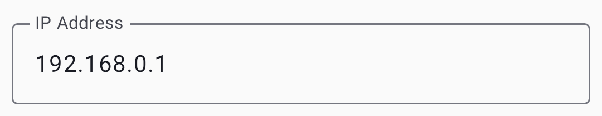
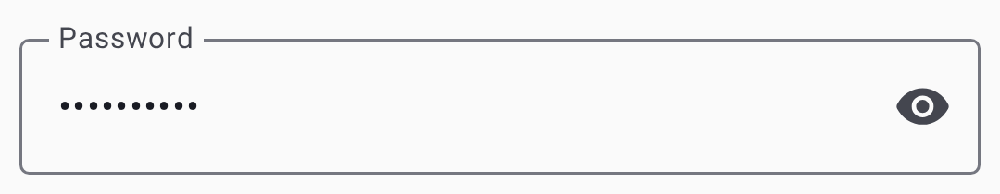
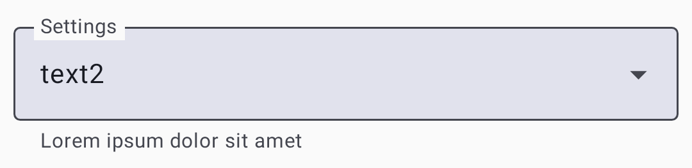
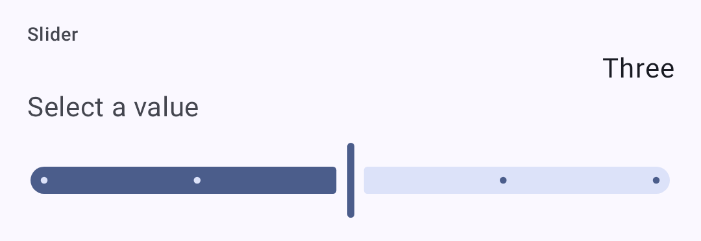

Asetukset — Radio ja käyttäjä
Määritä radion laitteisto ja käyttäjätunnistetiedot.
Käyttäjäasetukset
Käyttäjäprofiili
| Asetus | Kuvaus |
|---|---|
| Pitkä nimi | Näyttönimesi (enintään 39 merkkiä) |
| Lyhytnimi | 4-merkkinen lyhytnimi |
| Lisensoitu radioamatööri | Ota käyttöön, jos sinulla on radioamatöörilupa (mahdollistaa suuremman lähetystehon) |
Muutosten käyttöönotto
Asetusten muuttamisen jälkeen napauta Tallenna kirjoittaaksesi määritykset radioon. Laite voidaan käynnistää uudelleen muutosten käyttöönottoa varten.
Radion asetukset
Laitteen asetukset
| Asetus | Kuvaus | Oletus |
|---|---|---|
| Rooli | Radion rooli (Client, Router jne.) | Client |
| Uudelleenlähetyksen tila | Miten radio välittää viestejä eteenpäin | Kaikki |
| Radiotiedon lähetys (s) | Radion tietojen lähetysväli | 10800 |
| Kaksoisnapautuspainike | Toiminto painikkeen kaksoisnapautukselle | Ei käytössä |
LoRa:n asetukset
| Asetus | Kuvaus | Oletus |
|---|---|---|
| Alue | Taajuusalueiden sääntelyalue | Ei asetettu (on määritettävä) |
| Modeemin esiasetus | Nopeuden ja kantaman välinen kompromissi | LongFast |
| Hyppyraja | Suurin hyppyjen määrä | 3 |
| Lähetysteho | Lähetysteho (dBm): 0 = alueen sallima enimmäisteho | 0 (alueen enimmäisteho) |
| Taajuuspoikkeama | Taajuuden hienosäätö (MHz) | 0 |
| Kanavan kaistanleveys | Kaistanleveysasetus | Esiasetuksen oletusarvo |
⚠️ Tärkeää: Sinun täytyy määrittää alueesi ennen lähettämistä. Lähettäminen väärällä alueasetuksella voi rikkoa paikallisia radiomääräyksiä. Katso alueasetusten määritysopas meshtastic.org-sivustolta saadaksesi lisätietoja.
Esiasetukset
💡 Vinkki: SNR-raja-arvot ovat tarkoituksella negatiivisia. LoRa pystyy purkamaan signaaleja kohinatason alapuolelta, joten negatiivisempi raja tarkoittaa, että esiasetus sietää heikomman ja kohinaisemman signaalin (suurempi kantama). Katso Miten signaalimittari toimii saadaksesi täydellisen selityksen.
| Esiasetus | Kantama | Nopeus | SNR-raja | Paras käyttöön |
|---|---|---|---|---|
| Short Turbo | ~1 km | 21.9 kbps | −7.5 dB | Tiheä kaupunkiympäristö suoralla näköyhteydellä; paljon dataa siirtävät sovellukset |
| Short Fast | ~3 km | 10.9 kbps | −7.5 dB | Kaupunkialueet, rakennuksia muutaman korttelin säteellä |
| Short Slow | ~5 km | 5.5 kbps | −10 dB | Lyhyen kantaman esikaupunkialueet; kohtalainen rakennustiheys |
| Medium Fast | ~5 km | 5.5 kbps | −12.5 dB | Esikaupunkialueet; kohtalainen rakennustiheys |
| Medium Slow | ~8 km | 1.1 kbps | −15 dB | Esikaupunki-/maaseutualueet; kohtalainen kantama ja hitaampi nopeus |
| Long Turbo | ~10 km | 4.4 kbps | −12.5 dB | Samankaltainen kantama kuin Long Fast -asetuksella, mutta 500 kHz:n kaistanleveydellä; suurempi tiedonsiirtonopeus |
| Long Fast | ~10 km | 1.1 kbps | −17.5 dB | Yleiskäyttö (oletus) — tasapaino kantaman ja nopeuden välillä |
| Long Moderate | ~20 km | 0.34 kbps | −17.5 dB | Maaseutualueet, joissa on jonkin verran maastonmuotoja; satunnainen käyttö |
| Lite Fast | ~5 km | 5.5 kbps | −12.5 dB | EU 866 MHz SRD -alue (125 kHz BW); verrattavissa Medium Fast -asetukseen |
| Lite Slow | ~10 km | 1.1 kbps | −15 dB | EU 866 MHz SRD -alue (125 kHz BW); verrattavissa Long Fast -asetukseen |
| Narrow Fast | ~5 km | 2.7 kbps | −10 dB | EU 868 MHz -alue (62,5 kHz BW); välttää häiriöitä muiden laitteiden kanssa |
| Narrow Slow | ~10 km | 1.1 kbps | −12.5 dB | EU 868 MHz -alue (62,5 kHz BW); verrattavissa Long Fast -asetukseen |
| ~30 km | 0.18 kbps | −20 dB | ⚠️ Vanhentunut — edelleen valittavissa, mutta voidaan poistaa tulevassa laiteohjelmistoversiossa | |
| ~40+ km | 0.09 kbps | −20 dB | ⚠️ Vanhentunut — edelleen valittavissa, mutta voidaan poistaa tulevassa laiteohjelmistoversiossa |
ℹ️ Huomautus: Tässä taulukossa käytetään yleisesti käytössä olevia lyhyitä nimiä. Sovelluksen esiasetusvalikossa ne näkyvät nimillä Lyhyt kantama - Nopea, Pitkä kantama - Nopea, Lite - Nopea, Kapea - Nopea ja niin edelleen.
Modeemiesiasetuksen valitseminen
Modeemiesiasetus määrittää tärkeimmän kompromissin kantaman ja tiedonsiirtonopeuden välillä:
- Hitaammat esiasetukset käyttävät enemmän hajautusta, jolloin signaali voidaan purkaa heikommilla signaalitasoilla (alempi SNR-raja). Tämä tarkoittaa pidempää kantamaa, mutta vähemmän tavuja sekunnissa.
- Nopeammat esiasetukset siirtävät enemmän dataa, mutta vaativat vahvemman signaalin purkamista varten.
Käytännön ohje:
- Kaupunkiverkko (paljon radioita, lyhyet etäisyydet): Käytä Long Fast -asetusta (oletus) tai Short Fast -asetusta. Suurempi nopeus tarkoittaa vähemmän käyttöasteruuhkaa, kun monet radiot jakavat saman kanavan.
- Maaseutu tai harva verkko (vähän radioita, pitkät etäisyydet): Käytä Long Moderate -asetusta. Kantama on tärkeämpi kuin nopeus, kun radiot ovat kaukana toisistaan.
- EU 866/868 MHz -alueen säädösten noudattaminen: Käytä Lite Fast, Lite Slow, Narrow Fast tai Narrow Slow -asetuksia — ne on optimoitu EU:n SRD/868 MHz -alueille kapeammilla kaistanleveyksillä.
- Kiinteät infrastruktuurilinkit: Käytä Short Turbo- tai Long Turbo -asetusta erillisille pisteestä pisteeseen -linkeille, joissa on hyvät antennit ja suora näköyhteys.
- Sekaverkot: Pysy Long Fast -asetuksessa — se on yhteisön oletusasetus ja varmistaa yhteensopivuuden alueesi muiden käyttäjien kanssa.
⚠️ Tärkeää: Kaikkien samalla kanavalla olevien radioiden täytyy käyttää samaa modeemiesiasetusta. Radiot, joiden modeemiesiasetukset eivät täsmää, eivät voi viestiä keskenään, vaikka ne käyttäisivät samaa taajuutta ja salausavainta.
💡 Vinkki: Yllä olevat kantama-arviot perustuvat tasaiseen maastoon ja vaatimattomiin antenneihin. Korkeuseroetu (mäki, rakennuksen katto) kasvattaa käytännön kantamaa huomattavasti. Hyvin sijoitettu Long Fast -asetusta käyttävä Router voi usein toimia paremmin kuin maan tasalla oleva Long Slow -asetusta käyttävä radio.
Näytön asetukset
| Asetus | Kuvaus |
|---|---|
| Näytön aikakatkaisu | Aika ennen näytön siirtymistä lepotilaan |
| Näyttöyksiköt | Metrinen tai imperiaalinen järjestelmä |
| OLED-tyyppi | Auto, SSD1306, SH1106, SH1107 |
| Kompassin suunta | Kompassinäytön kiertosäätö (0°, 90°, 180°, 270°) |
| ⚠️ Vanhentunut — korvattu Kompassin suunta -asetuksella; näkyy edelleen vanhemmissa laiteohjelmistoversioissa |
Sijainnin asetukset
| Asetus | Kuvaus |
|---|---|
| GPS-käytössä | Ota GPS käyttöön tai poista käytöstä |
| GPS-päivitysväli | Kuinka usein GPS-paikannusta päivitetään |
| Sijainnin lähetys (s) | Kuinka usein sijaintia jaetaan |
| Älykäs sijainti | Ota liikkeeseen perustuva lähetys käyttöön |
| Kiinteä sijainti | Käytä manuaalisesti asetettua sijaintia |
Virran asetukset
| Asetus | Kuvaus |
|---|---|
| Virransäästö | Ota vähän virtaa kuluttava lepotila käyttöön |
| Sammuta jälkeen (s) | Automaattisen sammutuksen ajastin |
| ADC-kerroin | Akun jännitteen kalibrointikerroin |
| Odota Bluetoothia (s) | Aika Bluetooth-yhteyden odottamiseen käynnistyksen yhteydessä |
| Mesh SDS -aikakatkaisu (s) | Erittäin syvän lepotilan aikakatkaisu |
Verkon asetukset
| Asetus | Kuvaus |
|---|---|
| WiFi käytössä | Ota WiFi-radio käyttöön (ESP32-laitteet) |
| WiFi SSID | Verkon nimi, johon yhdistetään |
| WiFi PSK | Verkon salasana |
| NTP-palvelin | Ajan synkronointipalvelin (NTP-palvelin) |
| Syslog-palvelin | Etätietojen palvelin |

Bluetooth asetukset
| Asetus | Kuvaus |
|---|---|
| Bluetooth käytössä | Ota Bluetooth-radio käyttöön tai poista käytöstä |
| Pariliitostila | Kiinteä PIN-koodi, satunnainen PIN-koodi tai ei PIN-koodia |
| Kiinteä PIN-koodi | PIN-koodi pariliitosta varten (oletus: 123456) |
Turvallisuusasetukset
| Asetus | Kuvaus |
|---|---|
| Julkinen avain | Radiosi julkinen avain (vain luku) |
| Ylläpitäjän avain | Avain etähallintaa varten |
| Yksityinen avain | Radiosi yksityinen avain (käsittele turvallisesti) |
| ⚠️ Poistettu — määritetään nyt automaattisesti, kun ylläpitoavain asetetaan | |
| Virheenkorjausloki | Tulosta reaaliaikainen virheenkorjausloki sarjaportin tai bluetoothin kautta |
| Sarjaportti käytössä | Ota sarjakonsoliyhteys käyttöön (siirretty laiteasetuksista) |
| Hallintatila | Rajoita muutokset muihin kuin ylläpitokanaviin |
| Varmuuskopioi avaimet | Tallenna radion avaimista salattu varmuuskopio tälle laitteelle (vain Android) |
| Palauta avaimet | Kirjoita varmuuskopioidut avaimet takaisin radioon (käytettävissä, kun varmuuskopio on olemassa) |
| Poista avaimen varmuuskopio | Poista tälle laitteelle tallennettu avainten varmuuskopio |
| Suojaustaso | Pakettien aitous – miten allekirjoittamattomia tai välitettyjä paketteja käsitellään: Tiukka, Tasapainoinen tai Yhteensopiva (edellyttää tuettua laiteohjelmistoa; Tiukka pyytää vahvistuksen) |

Asetukset käyttävät tavallisia asetussäätimiä — pudotusvalikoita, kytkimiä ja liukusäätimiä:
| Säädin | Kuvakaappaus |
|---|---|
| Pudotusvalikko |  |
| Kytkin |  |
| Liukusäädin |  |
Aiheeseen liittyvät aiheet
- Asetukset — Moduulit ja ylläpito — valinnaiset ominaisuusmoduulit ja laitteen ylläpitotoiminnot
- Signaalimittari — miten modeemiesiasetukset vaikuttavat signaalin laadun raja-arvoihin
- LoRa-määritykset — yksityiskohtainen LoRa-asetusten viite meshtastic.org-sivustolla
- Alkumääritykset — alueasetusten määritysopas meshtastic.org-sivustolla